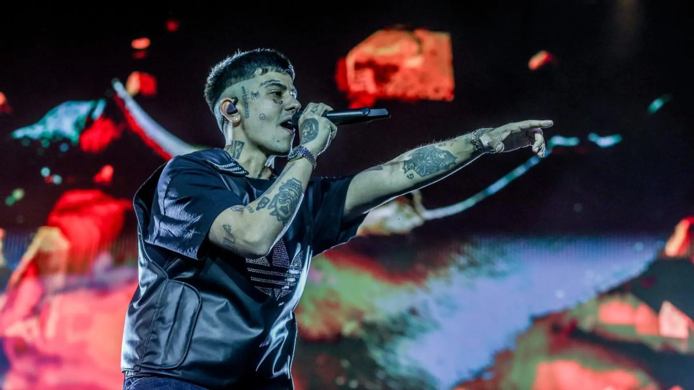
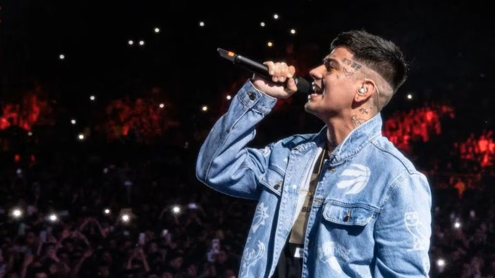

Introducción
Duki es el nombre artístico de Mauro Ezequiel Lombardo Quiroga, quien es considerado el principal referente del trap argentino. Fue uno de los primeros artistas del género en alcanzar un éxito masivo, llenando estadios y llevando la música urbana nacida en las plazas de Buenos Aires a escenarios internacionales. Gracias a su carisma, su capacidad melódica y su conexión con el público joven, se convirtió en la cara visible de toda una generación.

Su historia representa el paso del freestyle callejero a la industria musical. Lo que empezó como improvisaciones entre amigos terminó en una carrera internacional con millones de reproducciones. Muchos lo consideran quien abrió el mainstream al trap argentino. Además, ha mostrado gran versatilidad combinando rap agresivo con temas melódicos y emocionales.
Plataformas


Datos personales
| Nombre completo | Mauro Ezequiel Lombardo Quiroga |
|---|---|
| Nombre artístico | Duki |
| Fecha de nacimiento | 24 de junio de 1996 |
| Lugar de nacimiento | Buenos Aires, Argentina |
| Profesión | Rapero, cantante y compositor |
| Géneros musicales | Trap, rap, reguetón, pop urbano |
| Alias conocidos | El Duko |
Primeros años
Desde su infancia mostró interés por la música y por la cultura urbana. Escuchaba rap estadounidense, reguetón y distintos estilos modernos que más adelante influirían en su sonido. Durante la adolescencia comenzó a escribir letras y a practicar rimas con amigos, utilizando la música como forma de expresión personal.
Su entorno estuvo muy ligado a la vida de barrio, el skate, la ropa urbana y las reuniones en plazas públicas. Ese ambiente callejero se convirtió en la base estética y temática de muchas de sus canciones posteriores.
Freestyle y El Quinto Escalón
El salto a la popularidad llegó gracias a las batallas de freestyle. Duki participó activamente en El Quinto Escalón, una competición celebrada en el Parque Rivadavia que reunía a cientos de jóvenes cada semana. Allí desarrolló rapidez mental, presencia escénica y confianza frente al público.
Sus enfrentamientos se subían a YouTube y acumulaban millones de visitas, convirtiéndolo en uno de los competidores más reconocidos del circuito. Su estilo provocador, su energía y su actitud rebelde lo hicieron destacar rápidamente frente a otros MCs.

Etapa en Modo Diablo
Durante esta etapa conoció a YSY A y Neo Pistea, con quienes formó el colectivo Modo Diablo. Los tres artistas comenzaron a reunirse en la casa de Antezana 247, conocida como “La Cuna del Trap”, donde convivían, componían y grababan música de manera constante.
La combinación de sus estilos resultó muy efectiva: Duki aportaba melodías y estribillos pegadizos, YSY A añadía técnica y estructuras complejas, y Neo Pistea ofrecía crudeza y agresividad. Juntos definieron el sonido característico del trap argentino.
Carrera en solitario
Tras la etapa grupal, Duki inició una carrera en solitario que lo llevó a consolidarse como estrella internacional. Publicó álbumes propios, realizó giras por Latinoamérica y Europa y colaboró con artistas de gran relevancia dentro de la música urbana.
Sus conciertos comenzaron a llenar grandes recintos y festivales, demostrando que el trap argentino podía competir con escenas musicales mucho más consolidadas.
Estilo musical y lírico
El estilo de Duki se caracteriza por la mezcla entre rap y canto melódico. Puede pasar de flows rápidos y agresivos a estribillos emocionales con gran facilidad. Esta versatilidad le permite explorar diferentes estados de ánimo dentro de una misma canción.
Sus letras hablan de superación personal, éxito, presión mediática, relaciones sentimentales y experiencias vividas durante su ascenso a la fama. Esta sinceridad conecta especialmente con el público joven.
Discografía destacada
| Año | Proyecto | Tipo |
|---|---|---|
| 2019 | Súper Sangre Joven | Álbum |
| 2020 | 24 | EP |
| 2021 | Desde el Fin del Mundo | Álbum doble |
| 2023 | Antes de Ameri | Álbum |
Curiosidades
- Fue uno de los primeros traperos argentinos en llenar estadios de gran capacidad.
- Sus canciones superan millones de reproducciones en plataformas digitales.
- Es un referente de moda urbana y estilo juvenil.
- Mantiene una relación cercana con sus seguidores a través de redes sociales.
Impacto cultural y legado
La importancia de Duki va más allá de su música. Su éxito ayudó a cambiar la percepción del trap en Argentina, demostrando que un género nacido en plazas y estudios caseros podía convertirse en un fenómeno masivo. Gracias a él, muchos artistas jóvenes se animaron a producir y publicar su propia música.
Actualmente es considerado uno de los pilares fundamentales del movimiento urbano argentino y una figura clave para entender la evolución del trap en Latinoamérica.